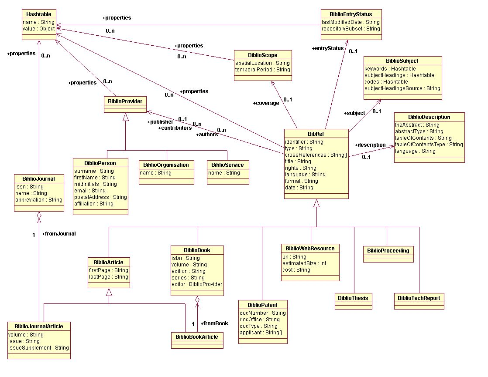

Class BibRef
- java.lang.Object
-
- org.biojava.bibliography.BibRef
-
- Direct Known Subclasses:
BiblioArticle,BiblioBook,BiblioPatent,BiblioProceeding,BiblioTechReport,BiblioThesis,BiblioWebResource
public class BibRef extends Object
This class is a core class of the bibliographic data model - it represents a bibliographic reference, a citation. It is a super-class for all specialized citation types, but it can also be instantiated and represent an additional specialized citation type.
The BibRef class has several explicit attributes, which are reasonably general and which originate from the Dublin Core Metadata, and a hashtable that can hold any number of additional attributes. The same pattern is repeatedly used on several other places of the data model. It achieves extendibility without losing interoperability if the following rules are obeyed:
- The implementation must be prepared for cases when the explicitly defined attributes are empty (containing null value, or, in case of arrays, an empty list of elements).
- The names of additional properties (keys of the hashtable) must be
obtainable and/or checkable using controlled vocabularies
(see interface
BibRefSupportfor details). - The values stored in that hashtable should be of "reasonable" types. Any implementation should understand at least basic Java types (in most cases the String type is the best choice). The more exotic types are used, the less interoperability between implementations is likely.
The BibRef class is a parent class for derived classes representing bibliographic references to specialized bibliographic resources. The following classes are defined explicitly:
BiblioBook,BiblioArticle,BiblioBookArticle,BiblioJournalArticle,BiblioPatent,BiblioThesis,BiblioProceeding,BiblioTechReport, andBiblioWebResourceThe active participants of the process of creation and dissemination of the bibliographic resources are defined by the class
BiblioProviderand its sub-classes. The participants can be people, organizations, or even software services (mainly used for new digital resources). The most obvious examples are authors, but it includes also publishers and other contributors.And finally, there is a class
BiblioJournaldescribing journals. The citations referring to the journal articles have a reference to this class.This is an overview of all participating classes and their attributes: .
- Since:
- 1.3
- Version:
- $Id$
- Author:
- Martin Senger
-
-
Field Summary
Fields Modifier and Type Field Description BiblioProvider[]authorsThe authors and contributors are responsible for creating the contents of the cited resource.BiblioProvider[]contributorsThe authors and contributors are responsible for creating the contents of the cited resource.BiblioScopecoverageIt defines an extent or scope of the content of the cited resource.String[]crossReferencesIt is an array of identifiers, all of them pointing to the same cited source but usually stored in different bibliographic repositories.StringdateDefines a date associated with an event in the life cycle of the cited resource when this resource became available.BiblioDescriptiondescriptionAn account of the content of the cited resource.BiblioEntryStatusentryStatusIt defines information related to the citation itself rather than to the cited resource.StringformatIt describes the physical or digital manifestation of the cited resource.StringidentifierIt is an unambiguous reference to this citation "within the world".StringlanguageIt defines a language of the intellectual contents of the cited resource.HashtablepropertiesAdditional attributes of this citation.BiblioProviderpublisherA publisher is responsible for making the resource available.StringrightsIt specifies information about rights over the cited resource.BiblioSubjectsubjectIt defines the topic of the content of the cited resource.StringtitleA title given to the cited resource (a name by which the resource is formally known).StringtypeIt defines the nature or genre of the cited resource.
-
Constructor Summary
Constructors Constructor Description BibRef()
-
-
-
Field Detail
-
properties
public Hashtable properties
Additional attributes of this citation.
-
identifier
public String identifier
It is an unambiguous reference to this citation "within the world". It is a string conforming to an identification system. An example of such system can be a combination of a well-known repository name and a unique identifier defined within this repository, such as MEDLINE/20000003.
-
type
public String type
It defines the nature or genre of the cited resource.
A recommended best practice is to use only values from a controlled vocabulary named as defined in
BibRefSupport.RESOURCE_TYPES. Syntactically, and because of making query navigation easier, the value of this attribute should be equal to a constant predefined inBibRefSupport, such asBibRefSupport.TYPE_BOOKfor books, orBibRefSupport.TYPE_JOURNAL_ARTICLEfor journal articles. However, there may be bibliographic resources, which are not defined by specialized sub-classes (for example, letters, practical guideline, or archives), and therefore they do not have predefined names inBibRefSupportinterface.Note that for the description of the physical or digital manifestation of the cited resource there is an attribute
format.
-
crossReferences
public String[] crossReferences
It is an array of identifiers, all of them pointing to the same cited source but usually stored in different bibliographic repositories.
Note that this attribute is not for referencing citations to other documents that are related to the cited document.
-
title
public String title
A title given to the cited resource (a name by which the resource is formally known).
-
subject
public BiblioSubject subject
It defines the topic of the content of the cited resource.
-
description
public BiblioDescription description
An account of the content of the cited resource. It is either an abstract, or table of contents, or both. It can be written in a language different from the language of the cited resource.
-
coverage
public BiblioScope coverage
It defines an extent or scope of the content of the cited resource. It can include spatial location (a place name or geographic co-ordinates), temporal period (a period label, date, or date range), or both.
-
authors
public BiblioProvider[] authors
The authors and contributors are responsible for creating the contents of the cited resource. There is no formal definition of how this responsibility is divided between them. However, the authors are usually primary creators while contributors may be illustrators, translators, or other creative providers.
The authors are in an ordered array (to be able to find the first author).
-
contributors
public BiblioProvider[] contributors
The authors and contributors are responsible for creating the contents of the cited resource. There is no formal definition of how this responsibility is divided between them. However, the authors are usually primary creators while contributors may be illustrators, translators, or other creative providers.
The contributors are in an ordered array (to be able to find the first contributor).
-
publisher
public BiblioProvider publisher
A publisher is responsible for making the resource available.
-
rights
public String rights
It specifies information about rights over the cited resource. Typically, it contains a rights management statement for the resource, or it refers to a service providing such information. Rights information often encompasses Intellectual Property Rights, Copyright, and various Property Rights.
If the attribute is empty, no assumptions can be made about the status of these and other rights with respect to the cited resource.
-
date
public String date
Defines a date associated with an event in the life cycle of the cited resource when this resource became available. Usually, it is a date of publishing. However, for not yet published resources, it can be a date of creation.
The suggested encoding is as defined in a W3C NOTE Date and Time Formats. This NOTE defines a profile of ISO8601 standard. ISO8601 describes a large number of date/time formats and the NOTE reduces the scope and restricts the supported formats to a small number. The profile offers a number of options from which this attribute should contain/permit only the following ones:
- Year
- YYYY (e.g., 2000)
- Year and month
- YYYY-MM (e.g., 2000-12)
- Complete date
- YYYY-MM-DD (e.g., 2000-12-31)
- Complete date plus hours, minutes, and seconds
- YYYY-MM-DDThh:mm:ssZ (e.g., 2000-12-31T23:59:59Z)
Exactly the components shown here must be present, with exactly this punctuation. Note that the T appears literally in the string, to indicate the beginning of the time element, as specified in ISO 8601.
Times are expressed in UTC (Coordinated Universal Time), with a special UTC designator (Z), again as specified in ISO 8601.
For query purposes, the format with fewer details is considered as having all possible values in place of missing details. Thus, YYYY-MM would mean all dates and times in the given month.
-
language
public String language
It defines a language of the intellectual contents of the cited resource. The recommendation is to use values as defined by RFC1766 which includes a two-letter Language Code (taken from the ISO639 standard), followed optionally by a two-letter Country Code (taken from the ISO3166 standard).
For example, en for English, fr for French, or en-uk for English used in the United Kingdom.
Another possibility is to use MARC List of Languages.
In any case, the name of the used controlled vocabulary should be equal to
BibRefSupport.LANGUAGES.
-
format
public String format
It describes the physical or digital manifestation of the cited resource. It can have very different content depending on the citation type. Therefore, it is highly recommended to use a controlled vocabulary to fill this attribute. The name of such vocabulary should be equal to the type of the reosurce type followed byBibRefSupport.ATTR_FORMAT. For example:BibRefSupport.TYPE_BOOK/BibRefSupport.ATTR_FORMAT.
-
entryStatus
public BiblioEntryStatus entryStatus
It defines information related to the citation itself rather than to the cited resource.
-
-
Constructor Detail
-
BibRef
public BibRef()
-
-